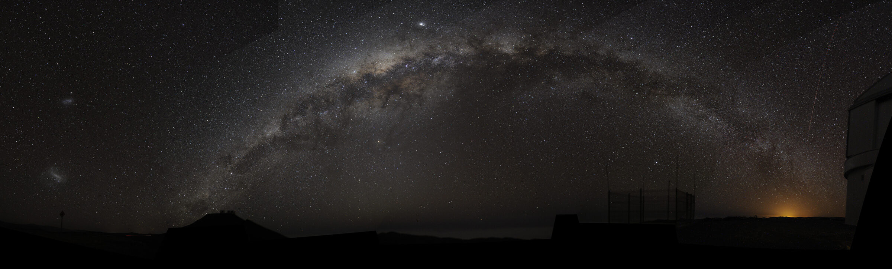

Milky Way travel guidePanduan Wisata Bima Sakti
If you want to travel our beautiful galaxy, you shouldn't miss out on these stunning places:Jika ingin menjelajahi galaksi kita yang indah, jangan lewatkan tempat-tempat menakjubkan ini:
Kurzgesagt-style infographic · Milky Way imagery: ESO/S. Brunier (CC BY 4.0) · rebuilt by deutan.dev

Perseus ArmLengan Perseus Our Solar SystemSistem Tata Surya KitaThe Milky Way's skyline has amazing sights. The gravity of nearby galaxies pulls it into a gentle curve.
Huge bubbles above and below the disk glow in gamma rays and X-rays — probably made by the supermassive black hole at the center.
Garis horizon Bima Sakti menawarkan pemandangan menakjubkan. Gravitasi galaksi-galaksi di sekitarnya menariknya membentuk lengkungan yang halus.
Gelembung-gelembung raksasa di atas dan di bawah piringan galaksi bersinar dalam sinar gamma dan sinar-X — kemungkinan besar terbentuk oleh lubang hitam supermasif di pusat galaksi.
About one billion Earth-sized exoplanets could support life as we know it.
Kepler-452b, 1,402 light-years away, sits in its star's habitable zone — a night out worth the trip.
Sekitar satu miliar eksoplanet berukuran Bumi berpotensi mendukung kehidupan seperti yang kita kenal.
Kepler-452b, berjarak 1.402 tahun cahaya, terletak di zona layak huni bintangnya — malam yang pantas diperjuangkan.
Nebulae are stellar nurseries where new stars are born. Supernovae carve them into fantastic landscapes.
The Pillars of Creation, in the Eagle Nebula, are a showstopper — enjoy the view.
Nebula adalah tempat kelahiran bintang baru. Supernova membentuknya menjadi lanskap yang menakjubkan.
Pilar Penciptaan di Nebula Elang adalah pemandangan yang tak terlupakan — nikmati panoramanya.
In the middle sits Sagittarius A*, a supermassive black hole 4 million times the Sun's mass.
Stars orbiting it at impossible speeds gave it away. A must-see.
Di tengahnya terdapat Sagittarius A*, lubang hitam supermasif bermassa 4 juta kali massa Matahari.
Bintang-bintang yang mengorbitnya pada kecepatan mustahil mengungkap keberadaannya. Tempat wajib dikunjungi.
The globular cluster NGC 2419 — the "Intergalactic Wanderer" — orbits far out, past the Large Magellanic Cloud.
Worth the day trip.
Gugus bintang bulat NGC 2419 — sang "Perantau Antar Galaksi" — mengorbit sangat jauh, melewati Awan Magellan Besar.
Lumayan dikunjungi dalam perjalanan sehari.
* Rough estimates — most objects in the Milky Way are hard to observe and count.* Perkiraan kasar — sebagian besar objek di Bima Sakti sulit diamati dan dihitung.